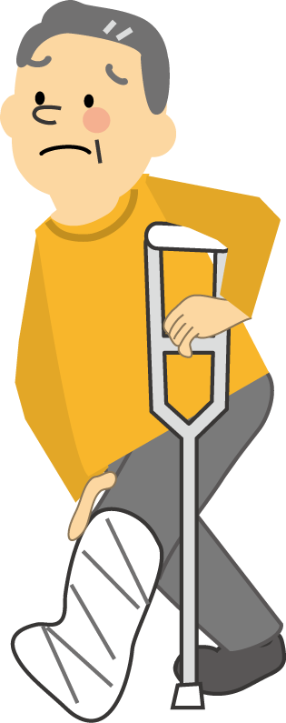
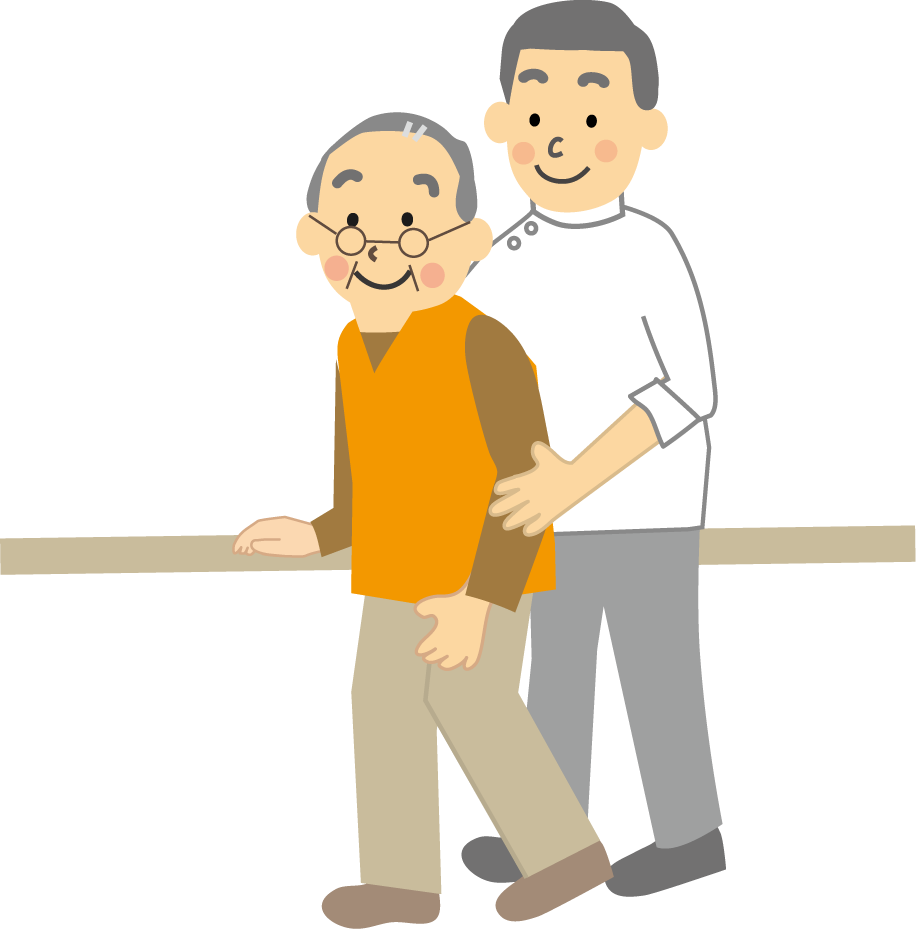

こんなお悩みはありませんか？
一つでも当てはまる方は、ぜひ一度ご相談ください。
お体の状態について
- 足腰が痛くて歩くのがつらい
- 脳梗塞などの後遺症で手足に痺れがある
- パーキンソン病で歩行がぎこちない
- 首や肩、腰の痛みで動きが鈍い

生活の状況について
- 病院まで一人で通うのが難しい
- 普段は車いすや歩行器具を使っている
- ほとんど寝たきりの状態である
- 独居や遠方の親御様が心配

お家でどんなことをするの？
一人ひとりの体調に合わせて、無理のない施術を行います。
ツボマッサージ
肩・腰・膝などのツボを刺激し、痛みを優しく和らげます。
鍼（はり）・お灸
足の冷えやむくみが気になる方に。体の芯から温まります。

ストレッチ・運動
硬くなった関節を動きやすくし、筋力低下を防ぐ運動をします。
【ご準備いただくもの】
特別な道具は不要です。いつものベッド、またはお布団を一枚ひいていただければ、そこが施術スペースになります。
代表：羽田野 正吾（はたの しょうご）
「また明日も頑張ろう」と思える体づくりを。
初めまして。代表の羽田野と申します。中川区で開業させていただきまして、はや20年になります。私は、ご自宅という一番安心できる場所で受ける施術が、心と体にどれほど大きな力を与えるかを大切にしています。
「家族に迷惑をかけたくない」「外に出るのが大変」とお悩みの方へ。ただ痛みを和らげるだけでなく、心まで軽くなるような時間を。お気軽にご相談ください。
ご利用者様の声
実際に施術を受けられている方から、温かいメッセージをいただきました。

NS 様（83歳）
要介護2 / 中川区在住
ご利用 3年目
5年前に脳梗塞をし、左の足と腕が動きにくく、おもだるい感じでした。今は週に2回リハビリとマッサージをしてもらっています。
おかげで調子よく元気が出るようになりました。料金も一回300円程度なので私にはとても助かります。今年で三年目になりますが、これからもお願いしたいとおもっています。
よくあるご質問
一切必要ありません。どうぞお気遣いなく、リラックスしてお待ちください。
ご本人のみでも大丈夫ですが、初回はご家族にもお話を伺えるとより安心です。
はい、お伺いいたします。どうしても交通状況が悪い場合は事前にお電話いたします。
ご利用はかんたん4ステップ
難しいことは一つもありません。私たちがサポートします。
ご相談
お気軽に
ご相談ください
無料体験
まずは一度
お試しを
医師の同意
手続きは
お任せ下さい
訪問開始
笑顔の毎日が
スタート！